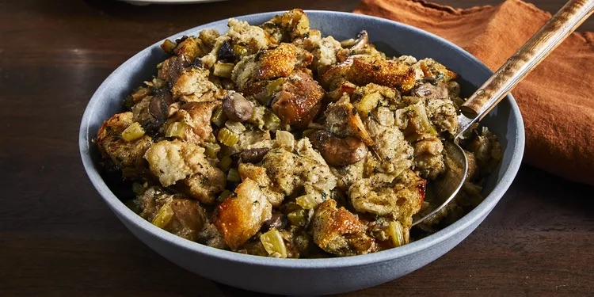

Stuffing

Description
This crockpot stuffing is an easy way to make extra stuffing for a large crowd — and it frees up stove space because it
cooks in a slow cooker. This recipe is designed for use in a standard 4-quart slow cooker and is very tasty and moist!
Ingredients
- Butter
- Vegetables
- Parsley
- Bread
- Spices
- Broth
- Eggs
Steps
- Sauté the vegetables.
- Spoon the cooked vegetables over the bread and season.
- Moisten with broth, then add the eggs.
- Transfer the mixture to a slow cooker and cook.